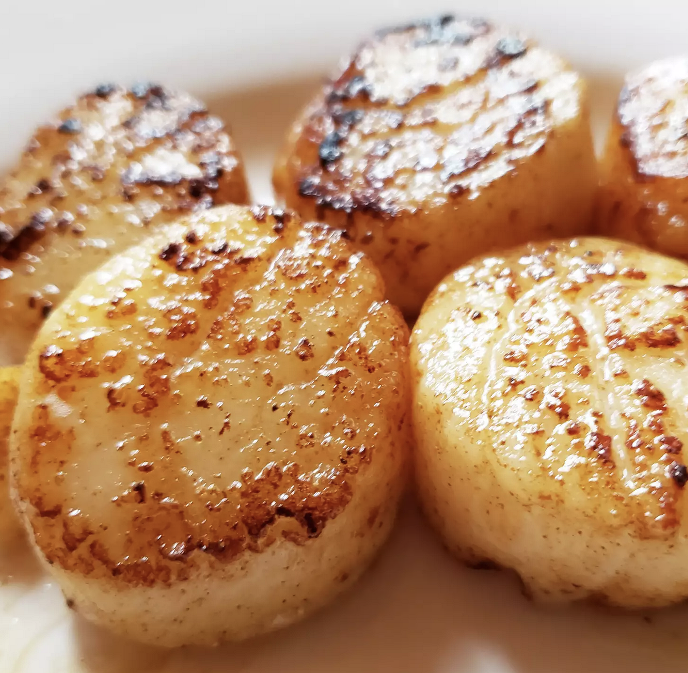

Scallops

Description
In this simple scallop recipe, large sea scallops are sautéed in butter and garlic and served with a lemon-butter sauce. They will melt in your mouth!
Ingredients
- ¾ cup butter
- 3 tablespoons minced garlic
- 2 tablespoons fresh lemon juice
- 2 pounds large sea scallops
- 1 teaspoon salt
Steps
- Melt butter in a large skillet over medium heat. Stir in garlic and cook for a few seconds until fragrant.
- Arrange scallops in a single layer in the skillet; cook until golden brown on one side, about 2 minutes. Turn scallops over using tongs and continue cooking until firm and opaque, about 2 minutes more. Transfer scallops to a platter, reserving butter in the skillet.
- Whisk lemon juice, salt, and pepper into butter; pour sauce over scallops to serve.